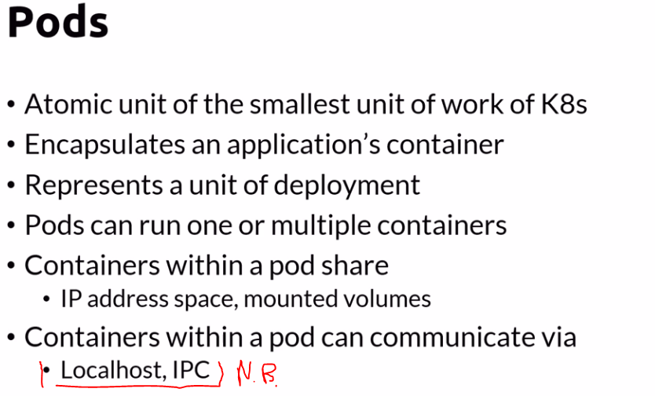

Usually when a pod runs more than one container one is the master and the other ones are helper containers that provide services to the main worker

ETCD is always the single source of truth in the cluster


kubectl run mynginx --image=nginx ---> create pod from image